XRD identification of discrete
clay minerals
Oriented mount versus random mount identification.
Random - Information potentially derived from XRD study
of possible (hkl) reflections.
Oriented - Information potentially
derived from XRD study
of the basal (00l) reflections.
One-dimensional XRD patterns. Information used in the assessment
Illite
Peak position - Recall Bragg's Law:
For the basal reflection
d = (001) is constant (e.g.,
d(001) illite =10Å)
Also, wavelength is constant, (e.g.,
Cu
radiation: λ =1.54059Å)
let n = l (i.e., the
order of the reflection1,2,3,...l),
then the angles of each reflection occur as an integral series of
d-spacings.
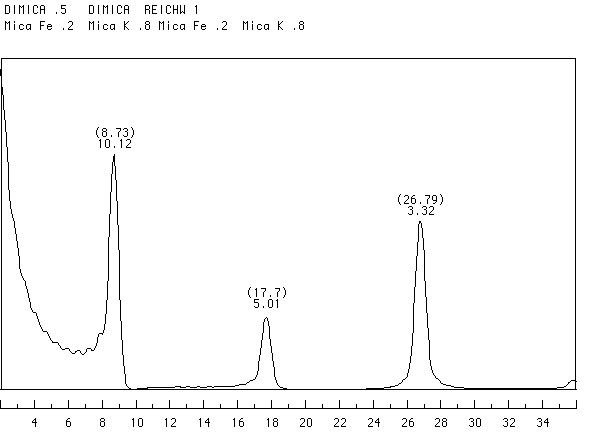
For lower angles,
(<40° 2θ) peaks occur at
evenly spaced intervals. Note in the diffractogram above that
the reflections for illite occur at even spaced intervals (i.e.,
D2θ = 8.7° or 8.7 x2 ~ 17.7 and
8.7 x 3 ~ 26.8).
Also note the d-spacings occur in an integral series (10/1 = 10Å,
10/2 = 5Å, 10/3 = 3.3Å, ... 10/n)
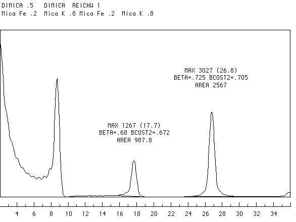
All members of the same discrete (00l) series have about the same full-width at half-maximum (FWHM). Recall the values beta (β) above are the values of the half-height in units of radians of 2θ. To convert this, measure the FWHM and then multiply by π/180°.
In the figure above, the range of coherent scattering domains (N) go from 3 to 14. Now compare the diffractogram above to the one below. The pattern below has an N range from 2 to 4. Notice the FWHM are much larger.
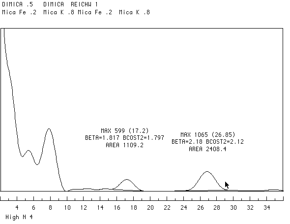
The iron content of illite can be qualitatively evaluated by looking at the ratios of different order reflections. More specifically, the I(002)/I(003) gives a clue to iron content. We also must assume the sample is infinitely thick.
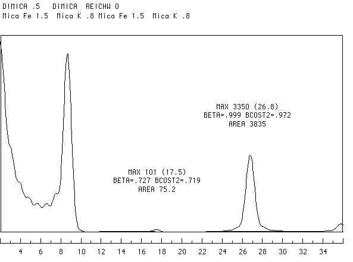
In the examples shown above (Fe-rich) and below (Fe-bearing) note the I(002)/I(003) ratios are very different. 0.03 for the Fe-rich versus 0.42 for the Fe-bearing.
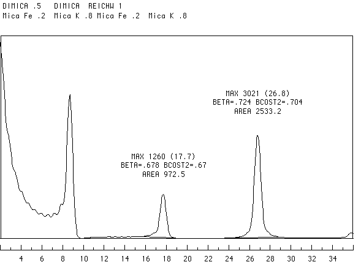
Illite polytypes
Using random powder mounts it is possible to distinguish polytypes in some clays. The diffractograms below are calculated patterns for potassium interlayered 2:1 structures that are 1M and 2M1 polytypes (ignore the title bars).
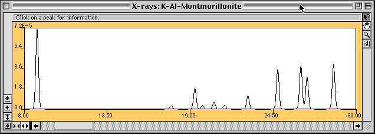 1M
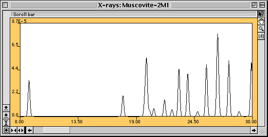2M1
Distinguishing various forms of chlorites is first accomplished by a study of the relative peak heights of the basal reflections. Recall that the basic repeat for the chlorites is ~14.2Å. Two common forms of chlorite are the Tri-Trioctahedral forms chlinoclore (Mg-variety) and chamosite (Fe-variety). The diffractograms below show the diminished intensity of the odd ordered reflection in the Fe-variety chamosite.
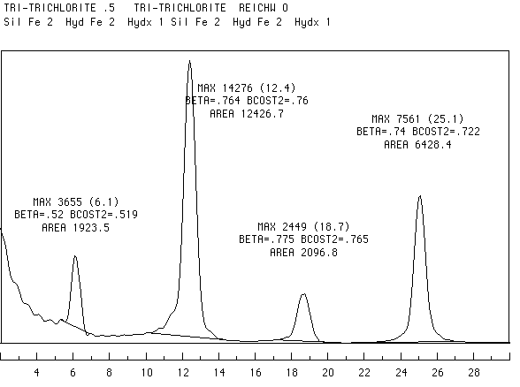 chamosite
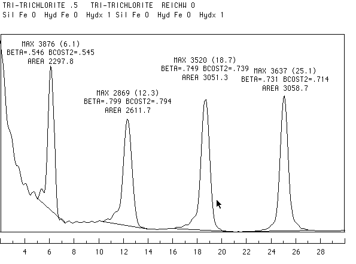chlinoclore
Chlorite versus Kaolinite
Methods for determining the presence or absence of the two phases. Caution! each one of these proposed methods potentially introduce artifacts or under certain circumstances have limitations. These caveats will be mentioned below.
1. Resolution of higher-order reflections. If the coherent scattering domains are large enough, the higher order reflections can be resolved. The kaolinite (002) at 3.58Å (CuKα 24.8° 2θ) can be distinguished from the chlorite (004) at 3.54Å (Cu Kα 25.1° 2θ)
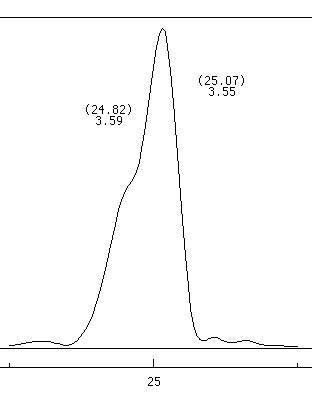 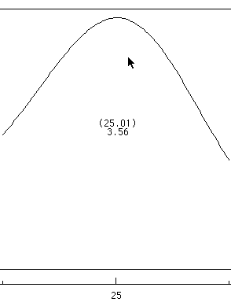
The difractograms above depict the 50/50 mixtures of kaolinite (002) and chlorite (004). The range of coherent scattering domains for the left and right are 20-30 and 2-6 respectively. Note the peaks on the right are so broad that they appear to be one peak with the average value of the two.
2. Heat treatments. Phase transformations at higher temperature include both solid-state transformations (displacive reorganization of the crystal structure) and neo-formation (the complete breakdown and reconstruction of one or more new structures).
Heating samples to 550° C often results in the following reactions.
3. Acid dissolution. Many chlorites are soluble when boiled in 2N HCl for about an hour. This will leave behind kaolinite. Halloysite will degrade with this treatment.
4. Kaolinite intercalation. Although the procedure can be involved, kaolinite will expanded to 11.4Å through chemical treatment. In this case the kaolinite peaks will migrate and the chlorite will remain in place. This technique should not expand 7Å serpentines.
5. Magnetic separation. If chlorites contain significant iron, then their magnetic susceptibility can be high enough to allow physical separation. See the reference below for more details.
Tellier, K.E., Hulchy, M.M., Walker, J.R., and Reynolds, R.C. (1988) Application of high gradient magnetic separation (HGMS) to structural and compositional studies of clay mineral mixtures. Journ. Sed Pet., 58(4), 761-763.
{kind=link}
{kind=link}